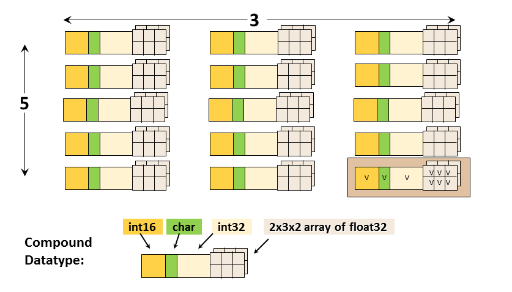
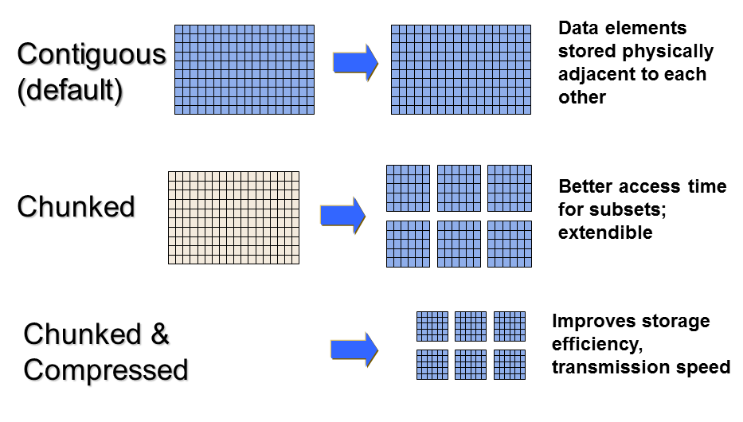

|
HDF5
1.15.0.4224aa0
API Reference
|

|
|
HDF5
1.15.0.4224aa0
API Reference
|
|
Navigate back: Main / Getting Started with HDF5
HDF5 consists of a file format for storing HDF5 data, a data model for logically organizing and accessing HDF5 data from an application, and the software (libraries, language interfaces, and tools) for working with this format.
HDF5 consists of a file format for storing HDF5 data, a data model for logically organizing and accessing HDF5 data from an application, and the software (libraries, language interfaces, and tools) for working with this format.
The HDF5 Data Model, also known as the HDF5 Abstract (or Logical) Data Model consists of the building blocks for data organization and specification in HDF5.
An HDF5 file (an object in itself) can be thought of as a container (or group) that holds a variety of heterogeneous data objects (or datasets). The datasets can be images, tables, graphs, and even documents, such as PDF or Excel:
The two primary objects in the HDF5 Data Model are groups and datasets.
There are also a variety of other objects in the HDF5 Data Model that support groups and datasets, including datatypes, dataspaces, properties and attributes.
HDF5 groups (and links) organize data objects. Every HDF5 file contains a root group that can contain other groups or be linked to objects in other files.
Working with groups and group members is similar in many ways to working with directories and files in UNIX. As with UNIX directories and files, objects in an HDF5 file are often described by giving their full (or absolute) path names.
HDF5 datasets organize and contain the “raw” data values. A dataset consists of metadata that describes the data, in addition to the data itself:

|
Datatypes, dataspaces, properties and (optional) attributes are HDF5 objects that describe a dataset. The datatype describes the individual data elements.
The datatype describes the individual data elements in a dataset. It provides complete information for data conversion to or from that datatype.
Datatypes in HDF5 can be grouped into:

|
A dataspace describes the layout of a dataset's data elements. It can consist of no elements (NULL), a single element (scalar), or a simple array.
A dataspace can have dimensions that are fixed (unchanging) or unlimited, which means they can grow in size (i.e. they are extendible).
There are two roles of a dataspace:
A property is a characteristic or feature of an HDF5 object. There are default properties which handle the most common needs. These default properties can be modified using the HDF5 Property List API to take advantage of more powerful or unusual features of HDF5 objects.

|
For example, the data storage layout property of a dataset is contiguous by default. For better performance, the layout can be modified to be chunked or chunked and compressed:
Attributes can optionally be associated with HDF5 objects. They have two parts: a name and a value. Attributes are accessed by opening the object that they are attached to so are not independent objects. Typically an attribute is small in size and contains user metadata about the object that it is attached to.
Attributes look similar to HDF5 datasets in that they have a datatype and dataspace. However, they do not support partial I/O operations, and they cannot be compressed or extended.
The HDF5 software is written in C and includes optional wrappers for C++, FORTRAN (90 and F2003), and Java. The HDF5 binary distribution consists of the HDF5 libraries, include files, command-line utilities, scripts for compiling applications, and example programs.
There are APIs for each type of object in HDF5. For example, all C routines in the HDF5 library begin with a prefix of the form H5*, where * is one or two uppercase letters indicating the type of object on which the function operates:
The HDF5 High Level APIs simplify many of the steps required to create and access objects, as well as providing templates for storing objects. Following is a list of the High Level APIs:
Useful tools for working with HDF5 files include:
The h5dump utility displays the contents of an HDF5 file in Data Description Language (DDL in BNF for HDF5 1.14.4 and above). Below is an example of h5dump output for an HDF5 file that contains no objects:
With large files and datasets the output from h5dump can be overwhelming. There are options that can be used to examine specific parts of an HDF5 file. Some useful h5dump options are included below:
The built HDF5 binaries include the h5cc, h5fc, h5c++ compile scripts for compiling applications. When using these scripts there is no need to specify the HDF5 libraries and include files. Compiler options can be passed to the scripts.
The HDFView tool allows browsing of data in HDF (HDF4 and HDF5) files.
The HDF5 Application Programming Interface is extensive, but a few functions do most of the work.
To introduce the programming model, examples in Python and C are included below. The Python examples use the HDF5 Python APIs (h5py). See the Examples from "Learning the Basics" page for complete examples that can be downloaded and run for C, FORTRAN, C++, Java and Python.
The general paradigm for working with objects in HDF5 is to:
The library imposes an order on the operations by argument dependencies. For example, a file must be opened before a dataset because the dataset open call requires a file handle as an argument. Objects can be closed in any order. However, once an object is closed it no longer can be accessed.
Keep the following in mind when looking at the example programs included in this section:
"import h5py / import numpy" "#include hdf5.h" "USE HDF5" and call h5open_f and h5close_f to initialize and close the HDF5 FORTRAN interface "import hdf.hdf5lib.H5;
import hdf.hdf5lib.HDF5Constants;" To create an HDF5 file you must:
Example:
Calling h5py.File with ‘w’ for the file access flag will create a new HDF5 file and overwrite an existing file with the same name. “file” is the file handle returned from opening the file. When finished with the file, it must be closed. When not specifying property lists, the default property lists are used:
| Python import h5py
file = h5py.File (‘file.h5’, ‘w’)
file.close ()
|
The H5Fcreate function creates an HDF5 file. H5F_ACC_TRUNC is the file access flag to create a new file and overwrite an existing file with the same name, and H5P_DEFAULT is the value specified to use a default property list.
| C |
As described previously, an HDF5 dataset consists of the raw data, as well as the metadata that describes the data (datatype, spatial information, and properties). To create a dataset you must:
Example:
With Python, the creation of the dataspace is included as a parameter in the dataset creation method. Just one call will create a 4 x 6 integer dataset dset. A pre-defined Big Endian 32-bit integer datatype is specified. The create_dataset method creates the dataset in the root group (the file object). The dataset is close by the Python interface.
| Python dataset = file.create_dataset("dset",(4, 6), h5py.h5t.STD_I32BE)
|
To create the same dataset in C, you must specify the dataspace with the H5Screate_simple function, create the dataset by calling H5Dcreate, and then close the dataspace and dataset with calls to H5Dclose and H5Sclose. H5P_DEFAULT is specified to use a default property list. Note that the file identifier (file_id) is passed in as the first parameter to H5Dcreate, which creates the dataset in the root group.
| C // Create the dataspace for the dataset.
dims[0] = 4;
dims[1] = 6;
dataspace_id = H5Screate_simple(2, dims, NULL);
// Create the dataset.
dataset_id = H5Dcreate (file_id, "/dset", H5T_STD_I32BE, dataspace_id, H5P_DEFAULT, H5P_DEFAULT, H5P_DEFAULT);
// Close the dataset and dataspace
status = H5Dclose(dataset_id);
status = H5Sclose(dataspace_id);
hid_t H5Screate_simple(int rank, const hsize_t dims[], const hsize_t maxdims[]) Creates a new simple dataspace and opens it for access. |
Once you have created or opened a dataset you can write to it:
| Python data = np.zeros((4,6))
for i in range(4):
for j in range(6):
data[i][j]= i*6+j+1
dataset[...] = data <-- Write data to dataset
data_read = dataset[...] <-- Read data from dataset
|
H5S_ALL is passed in for the memory and file dataspace parameters to indicate that the entire dataspace of the dataset is specified. These two parameters can be modified to allow subsetting of a dataset. The native predefined datatype, H5T_NATIVE_INT, is used for reading and writing so that HDF5 will do any necessary integer conversions:
| C herr_t H5Dread(hid_t dset_id, hid_t mem_type_id, hid_t mem_space_id, hid_t file_space_id, hid_t dxpl_id, void *buf) Reads raw data from a dataset into a provided buffer. herr_t H5Dwrite(hid_t dset_id, hid_t mem_type_id, hid_t mem_space_id, hid_t file_space_id, hid_t dxpl_id, const void *buf) Writes raw data from a buffer to a dataset. |
An HDF5 group is a structure containing zero or more HDF5 objects. Before you can create a group you must obtain the location identifier of where the group is to be created. Following are the steps that are required:
The code below opens the dataset dset.h5 with read/write permission and creates a group MyGroup in the root group. Properties are not specified so the defaults are used:
| Python import h5py
file = h5py.File('dset.h5', 'r+')
group = file.create_group ('MyGroup')
file.close()
|
To create the group MyGroup in the root group, you must call H5Gcreate, passing in the file identifier returned from opening or creating the file. The default property lists are specified with H5P_DEFAULT. The group is then closed:
| C status = H5Gclose (group_id);
|
To create an attribute you must open the object that you wish to attach the attribute to. Then you can create, access, and close the attribute as needed:
The dataspace, datatype, and data are specified in the call to create an attribute in Python:
| Python dataset.attrs["Units"] = “Meters per second” <-- Create string
attr_data = np.zeros((2,))
attr_data[0] = 100
attr_data[1] = 200
dataset.attrs.create("Speed", attr_data, (2,), “i”) <-- Create Integer
|
To create an integer attribute in C, you must create the dataspace, create the attribute, write to it and then close it in separate steps:
| C hid_t attribute_id, dataspace_id; // identifiers
hsize_t dims;
int attr_data[2];
herr_t status;
...
// Initialize the attribute data.
attr_data[0] = 100;
attr_data[1] = 200;
// Create the data space for the attribute.
dims = 2;
dataspace_id = H5Screate_simple(1, &dims, NULL);
// Create a dataset attribute.
dataspace_id, H5P_DEFAULT, H5P_DEFAULT);
// Write the attribute data.
status = H5Awrite(attribute_id, H5T_NATIVE_INT, attr_data);
// Close the attribute.
status = H5Aclose(attribute_id);
// Close the dataspace.
status = H5Sclose(dataspace_id);
hid_t H5Acreate2(hid_t loc_id, const char *attr_name, hid_t type_id, hid_t space_id, hid_t acpl_id, hid_t aapl_id) Creates an attribute attached to a specified object. |
Navigate back: Main / Getting Started with HDF5
 1.9.7
1.9.7